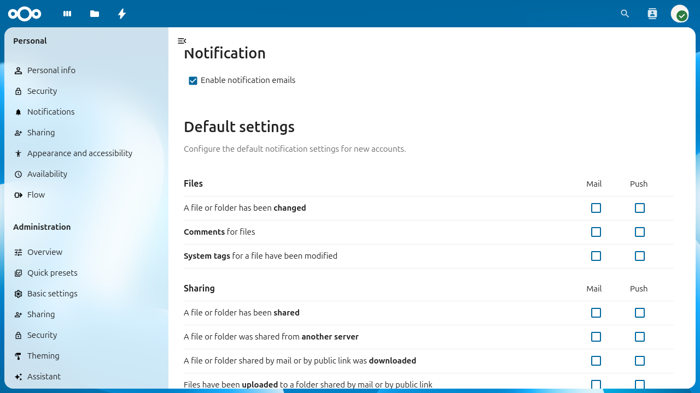

Activity app
The Activity app records and summarizes user-visible events across your Nextcloud instance and can notify users via the activity stream, email, and push notifications. It is shipped and enabled by default.
Note
The Activity app is designed for user notifications, not for compliance or auditing. Users can enable or disable activity tracking for their own account, so the activity stream is not a reliable audit trail. If you need a complete log of all actions on your instance, use the admin_audit app instead — see Logging.

The Activity admin settings page showing default notification preferences for new accounts.
Configuring your Nextcloud for the Activity app
Enabling email notifications
To send activity notification emails, a working Email is required.
It is also recommended to configure the background job run mode to a system
run mode (System Cron or systemd) as described in Background jobs.
The Ajax and Webcron modes may delay or skip email delivery.
Admin settings
As an administrator, you can:
Enable or disable notification emails globally using the Enable notification emails checkbox in Settings > Administration > Activity.
Configure the default notification preferences for new accounts. Existing users keep their personal settings. The defaults apply to accounts created after the change.
Configuration reference
The following config.php options control Activity app behavior.
Option |
Default |
Description |
|---|---|---|
|
|
Number of days to retain activity records. A daily background
job deletes all activities older than this value. Minimum is |
|
|
When |
|
|
An array of user IDs whose activity records are never deleted by the expiration job. See Excluding users from activity expiration. |
Activities in Team Folders or External Storages
By default, activities in team folders or external storages are only
generated for the current user. This is due to the underlying logic
of these storage backends. The config flag
activity_use_cached_mountpoints makes activities work like in
normal shares when set to true.
'activity_use_cached_mountpoints' => true,
Danger
If “Advanced Permissions” (ACLs) are enabled in a team folder, activities do not respect those permissions. As a result, users may see activity entries for files and directories they cannot access. This can leak sensitive information. See this issue for more information.
Warning
Users who previously had access to a team folder, share, or external storage can continue to see new activity entries in their stream and emails until they log in again after access is removed.
Note
Users who are newly added to a team folder, share, or external storage will not see new activity entries in their stream or emails until they log in again after access is granted.
Excluding users from activity expiration
For certain users, it might make sense to never expire their activity
data, for example administrators. Set the config value
activity_expire_exclude_users in your config.php:
'activity_expire_exclude_users' => [
'admin',
'group_admin',
'second_admin'
]
For these users, their activity records will never be deleted from the database.
Better scheduling of activity emails
In certain scenarios it makes sense to send the activity emails more regularly. For example, you may want to send the hourly emails always at the full hour, daily emails before people start to work in the morning, and weekly emails on Monday morning.
A console command is available to trigger sending those emails. This allows you to set up custom cron jobs with specific timing instead of relying on the Nextcloud background job:
# crontab -u www-data -e
0 * * * * php -f /var/www/nextcloud/occ activity:send-mails hourly
30 7 * * * php -f /var/www/nextcloud/occ activity:send-mails daily
30 7 * * MON php -f /var/www/nextcloud/occ activity:send-mails weekly
If you want to manually send out all queued activity emails, you can
run occ activity:send-mails without any argument.
Troubleshooting
Users are not receiving notification emails
Verify that email is configured correctly. Send a test email from Settings > Administration > Basic settings.
Check that Enable notification emails is turned on in Settings > Administration > Activity.
Verify that the user has email notifications enabled in their personal notification settings (Settings > Personal > Notifications).
Ensure the background job is running. If you use
Cron, check that the system cron job is executingphp -f /var/www/nextcloud/cron.phpregularly.Check the Nextcloud log (
data/nextcloud.log) for mail-related errors.
Database growing large due to activity data
The Activity app stores all events in the database. On instances with many users or high file turnover, this can lead to significant database growth. To manage this:
Set
activity_expire_daysto a lower value (e.g.90or180) to automatically clean up older records.Ensure the Nextcloud background job is running so that the daily expiration job executes.
To assess current database usage, check the size of the
oc_activityandoc_activity_mqtables directly.